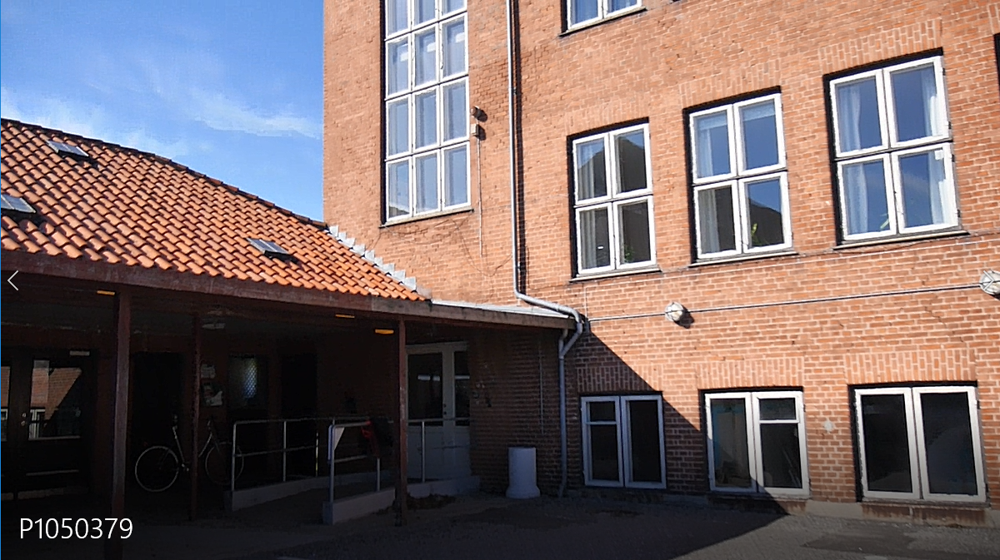
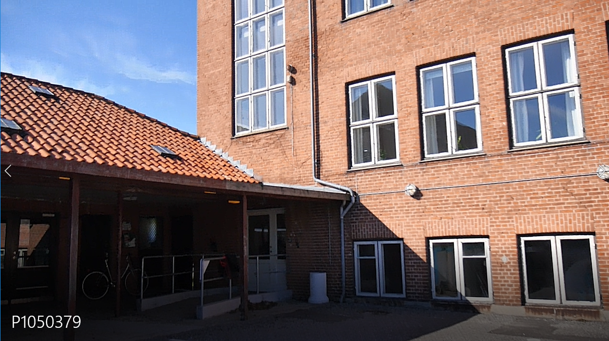

Om Filmfabrikken
Filmfabrikken er en filmskole på Møn. Vi underviser folkeskole elever i alderen 13-18 år, fra Vordingborg Kommune, i at producere film.
Filmfabrikken er en filmskole på Møn. Vi underviser folkeskole elever i alderen 13-18 år, fra Vordingborg Kommune, i at producere film.

Eleverne på filmfabrikken, kan forvente at blive undervist af uddannede fagfolk, i producere film.
Filmskolen har et proffessionelt fagligt niveau men ikke så højt, at det ikke skal være sjovt.
Derudover vil eleverne stifte nye bekendtskaber og indgå i nye fællesskaber med jævnaldrende.